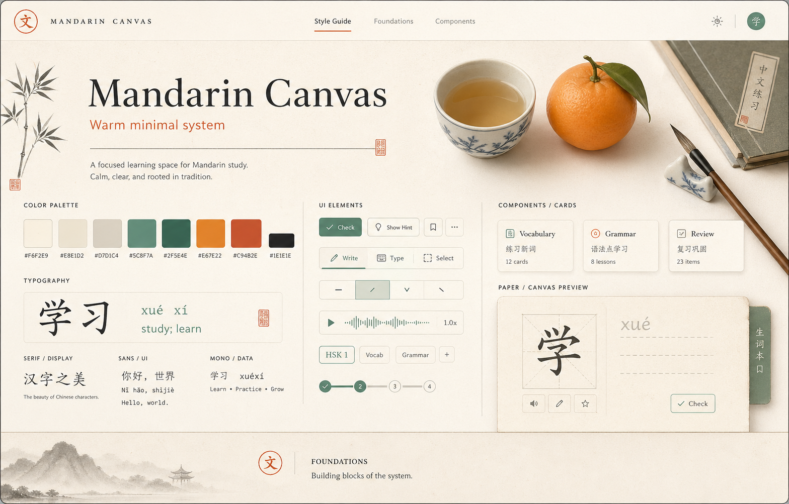

ma1 · ㄇㄚ
媽
Small, precise tools. Warm surfaces. Nothing louder than the learning.
A focused study desk for Mandarin: paper warmth, crisp ink, compact tools, mandarin accents, and jade precision states.
